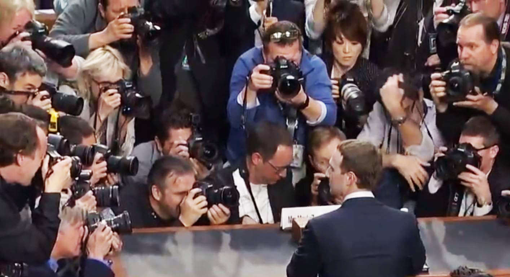

Zuck 'doesn't know' if Facebook tracks mobile devices
'Doesn't know' if Facebook tracks users after they've logged out
Zuck 'doesn't know' if Facebook tracks mobile devices
'Doesn't know' if Facebook tracks users after they've logged out

FBI RAIDS TRUMP LAWYER'S OFFICE, HOME
Seized emails, tax documents related to Stormy Daniels
Bank fraud, wire fraud, campaign finance violations...
Info from Mueller led to warrant
Stormy situation just the tip of the iceberg?
Homeland Security Adviser Tom Bossert resigns
Pope: immigration issue just as important as abortion
‘Hidden histories’ of Colonial New England churches to be digitized
Trump threatens 'Animal Assad,' Putin over alleged chemical attack in Syria
Major Syrian air base bombed; Syria, Russia accuse Israel
Trump promises U.S. decision on response in next 48 hours
Russia has figured out how to jam U.S. drones
YouTube illegally collects data on children, say child protection groups

What Google knows about me (and probably you, too)
Iran Threatens to Restart Nuke Enrichment Program in Matter of Days
UK: Urinals to be banned as discriminatory?
Leading UK boarding school to allow boys to wear skirts
VIDEO: Zuckerberg testifies before Senate

Says Facebook responsible for content
Confirms company working with Mueller's investigation
Senator asks if he'd share hotel he's staying at, names of people he's messaged this week
Stumped When Asked To 'Define Hate Speech'
Gaslit Congress Before Hearings Even Started...
Prepared Testimony Omitted Everything That Happened From 2008-2012 🤔
Facebook walks back 'unsafe for community' tag on pro-Trump Diamond and Silk
Apple co-founder Wozniak latest to ditch network over data collection
Biggest Black Lives Matter page a scam tied to white Australian...
Radical lesbian politico set to assume top spot at Planned Parenthood
Boston Marathon: Men who identify as women can compete in women's race
Bots May Be Behind Two-Thirds of Links Shared on Twitter, a New Study Finds
CEO Shares And Commends Article Calling For Dem Victory In Second ‘Civil War’
Xi blinks? China pledges to open economy, cut tariffs this year as U.S. trade row deepens
China’s High-Tech Plan to Control Its Citizens Completely
Common Antidepressants in Pregnancy May Alter Fetal Brain Development

Atheist to oversee UK hospital chaplaincy